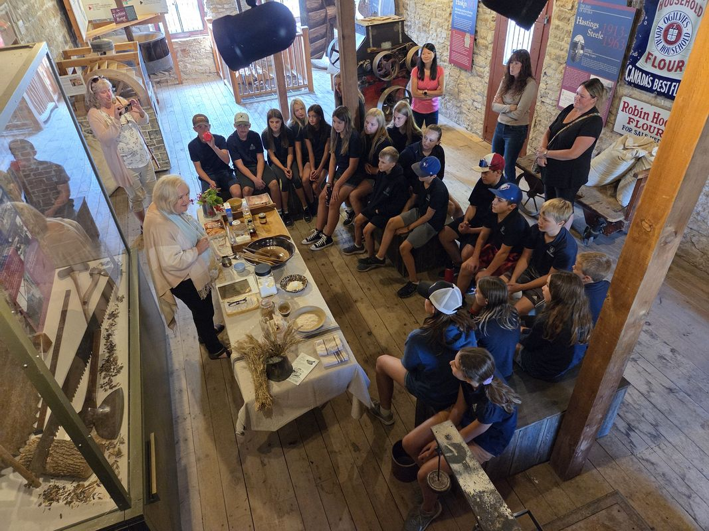

A National Historic Site of Canada · Delta, Ontario
History of the
Old Stone Mill
Established 1810 · Leeds County, Upper Canada


The Old Stone Mill is more than a building.
It is the reason a village exists.
Built in 1810 on bedrock above the Lower Beverley, the mill drew settlers, shaped the landscape, and sustained the farming communities of Leeds County for one hundred and fifty years. Today it stands as the oldest surviving stone grist mill in Ontario — still operational, its two-hundred-year-old millstones still turning — and one of the most intact examples of early industrial architecture in the country.
Origins of the Settlement
1794 — 1810In February 1794, Abel Stevens arrived at the unsurveyed territory above the Beverley Lakes. A Vermont-born loyalist, he settled on the upper reaches of Plum Hollow Creek — one of the first Europeans to claim land in this corner of eastern Ontario. On June 2, 1796, he received formal title to 700 acres: lots 23, 24, and 25.
Within months, Stevens had built a wooden sawmill on the creek, diverting water from Upper Beverley Lake. His dam raised the water level four to five feet, creating the conditions not just for milling, but for a village. By 1797, the site was already recorded on maps as "Wm. Stevens Mill." By 1808, his son had built a second sawmill on nearby Foundry Creek.
The settlement went by several names in its early years — Stevens Mills, then Beverley — drawing other trades and families around the gravity of the mill. Everything that followed, including the stone mill that would define the village for two centuries, grew from these first years of Stevens' enterprise.

"Unquestionably the best building of the kind in Upper Canada."Contemporary assessment of the Old Stone Mill, 1817
The Stone Mill
1810
After 1800, the mill property passed from Abel Stevens to William Jones. Jones saw the limitations of the original wooden structure and conceived something far more ambitious: a permanent stone mill built to last generations. In 1810, Jones and his partner Ira Schofield began construction on the site north of Stevens' original mill.
The result was a three-and-a-half-storey Georgian building, set directly on bedrock. Its stone walls, segmental double-hung windows with twelve-over-eight panes, stone voussoirs above every opening, and recessed centre doorway gave the building an architectural authority unusual in the frontier settlements of Upper Canada.
But Jones did not build simply. He equipped the mill using the principles of Oliver Evans, an American inventor whose 1795 publication had described the world's first fully automated flour mill. Where most mills required millers to carry grain by hand between floors, the Delta mill moved grain automatically — by bucket elevator, conveyor, hopper, and gravity — from millstone to bolter to finished flour. It was, by every contemporary measure, the most advanced milling operation in the province. Seven years after its completion, a visitor's account judged it "unquestionably the best building of the kind in Upper Canada."
Water, Landscape & Village Life
1810 — 1857The geography of Delta, Ontario was not simply found. It was made. Abel Stevens' original dam raised the Beverley water four to five feet. When William Jones built the stone mill on bedrock above it, the structure served partly as its own dam — raising the water a further nine feet. Together, the two interventions merged what had originally been two distinct lakes into one continuous body of water. The shape of that lake, seen from high ground, resembles a triangle. In 1857, when the post office required a new name, Delta was chosen: the fourth letter of the Greek alphabet, always drawn as a triangle.
A grist mill in the early nineteenth century was an economic anchor. Every other trade gathered around it. By the time the stone mill was complete, smithies, general stores, hotels, a tannery, a distillery, a foundry, a brickyard, and a cheese factory had all come to cluster around the village. The horse shed adjacent to the mill served at various times as courthouse and schoolroom. A concert hall nearby later became the Museum of Industrial Technology.
By 1851, Delta's population had reached 250. By 1897, it approached 500. The railway arrived in 1888, connecting the mill to regional markets until its withdrawal in 1952 — by which point the era of the commercial grist mill was already drawing to a close.


Life at the Stone
1810 — 1960
The Old Stone Mill operated continuously for one hundred and fifty years. Through the settlement era, through Confederation, through two world wars, the millstones turned. Farmers from across Leeds County brought grain — wheat, rye, buckwheat, and corn — and left with flour, meal, and feed. The mill was the economic heartbeat of the valley.
In 1850, Walter H. Denaut purchased the mill and invested in its future. In 1860, the original waterwheel was replaced with cast-iron turbines in a purpose-built turbine shed — the mill kept pace with the industrial age without surrendering its Georgian bones. In 1893, roller-milling machinery was installed, converting the operation to a merchant mill capable of finer commercial production.
The millstones themselves — great French burrstones that ground the grain — were two centuries old when commercial milling finally ceased around 1960. They remain in place today: silent, worn smooth by the weight of every harvest the valley ever sent through them.




Preservation & Heritage
1963 — PresentWhen commercial milling ceased, the mill's fate was uncertain. The building, the machinery, the millstones — everything faced the slow erosion of neglect. In 1963, a small group of local people decided otherwise. The property was transferred to four trustees for the sum of one dollar. From this arrangement, the Delta Mill Society was born: an all-volunteer organisation with a single mandate, to preserve the mill and return it to working operation.
Over the following decades, the Society invested more than two million dollars in the mill's restoration. In 1970, the federal government designated the site a National Historic Site of Canada. Between 1999 and 2004, a major conservation programme addressed the structural fabric — stone walls, timber frames, and the turbine shed — while keeping the original machinery intact and operational.
Today the mill opens each summer. Its waterwheel turns. Its millstones grind heritage Red Fife wheat into flour, exactly as they have since 1810. Visitors can follow the journey of grain from the hopper to the bolter to the flour bag, tracing a process unchanged in its essentials for over two hundred years. The adjacent Blacksmith Shop, recently restored, operates during special events — including the Delta Harvest Festival each September.

Visit the mill
this September.
On 26–27 September 2026, the Old Stone Mill opens for the Delta Harvest Festival — milling demonstrations, blacksmithing, music, and community in a living heritage setting.
Return to the Festival ↗